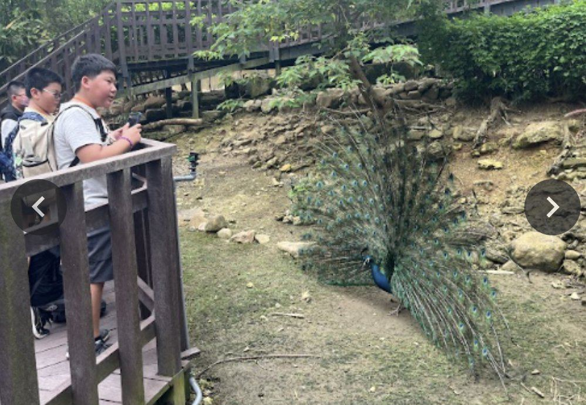

Graduation Trip畢業旅行
From April 23 to 24, 2026, our seniors officially embarked on their long-awaited graduation trip! With backpacks and big smiles, they were ready for a two-day adventure to create wonderful memories together.
Warm Support and Tasty Treats. A huge thank you to PTA President Mr. Chung for providing "extra food money" for our students! This kind gift allowed the children to explore many delicious snacks at Janfusun Fancyworld and Ruifeng Night Market. With full stomachs and happy hearts, they truly enjoyed every moment of the trip.
From Roller Coasters to the Harbor City. The trip was packed with excitement! Day one featured thrilling rides at Janfusun and a food hunt at the famous night market. On day two, students took a ferry to Cijin, explored the art at Pier-2, and visited the cute animals at Shoushan Zoo. This trip is more than just a tour; it's about the precious friendship that will last a lifetime!

115 年 4 月 23 日至 24 日，校園裡響起了期待已久的歡笑聲，畢業旅行正式啟航！畢業生們精神抖擻地揹起行囊，準備展開這場關於青春與友情的兩天一夜冒險旅程。
暖心加菜，美食大補帖。在孩子們踏上旅程之際，特別感謝家長會鐘國倫會長貼心準備的「美味加菜金」。這份暖心的禮物讓孩子們在劍湖山世界與瑞豐夜市的尋寶時光中，可以盡情挑選喜愛的美食，讓大家電力滿滿地享受旅程中的每一刻！
從尖叫樂園到港都風情。這兩天的行程精彩絕倫：首日挑戰「劍湖山世界」的驚險設施，晚上在「瑞豐夜市」與飯店宵夜中度過歡樂食光。次日則造訪高雄，體驗旗津渡輪、漫步駁二藝術特區，並在壽山動物園與可愛動物們驚喜相遇。這趟旅程不只是旅遊，更是同學間最純真情誼的累積，成為我們心中最棒的畢業禮物！